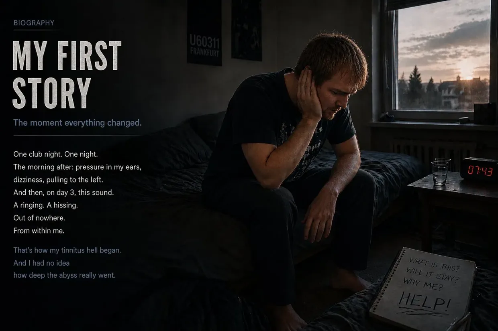

My Way Out of Tinnitus Hell (The Short Version)
Hello, my name is Dustin Müller.
If you’ve just landed on this page, you’re probably stuck in the same hell I was in back then. If you want to read the full 9,000-word story of my recovery, you can find the complete story here.
For everyone else looking for quick answers and the thread tying it all together: here is a concise summary of how I fought my tinnitus all the way down from 100% to 0% using uncompromising logic and biohacking.
1. The Crash (Autumn 2011)
I was 23 years old, in perfect health, and thought my body could take anything. A single night at a techno club in Frankfurt (U60), directly in front of the bass speaker, was enough to pull the plug on my entire system. The next morning, I woke up “only” with extreme dizziness, dull pressure in my ears, and a powerful pull to the left. I thought my body would sort itself out. But on day 3, the real monster awakened: suddenly, there was this infernal ringing and a rushing noise in my ears. My system had completely collapsed.
2. The Failure of the System (“Learn to Live with It”)
In my panic, I ran from one ENT doctor to the next. The answers I got back then were a slap in the face: I was told that my hearing was permanently damaged and that I had to “learn to live with it.” I was even advised to mask the tone with music or “white noise” (masking/TRT), and was offered antidepressants if needed.
Looking back, this “masking” was disastrous advice for me, leading to my second total crash: blindly trusting the doctors, I listened to loud music during a car ride to school to “take my mind off it.” That was the last straw for my depleted cells. At school, I suddenly developed a brutal sensitivity to sound (hyperacusis), my field of vision flipped over (vertigo), and the ion buildup in my ear completely flooded my vestibular organ (Ménière’s-type symptoms). I was completely isolated and could no longer leave the house.
3. The Turning Point: Proof That My Tinnitus Wasn’t a “Phantom Sound”
Afterward, a tinnitus specialist tried to convince me that after a few months, my tinnitus was nothing more than a “phantom sound” in the brain. A chance event gave me proof to the contrary: while I was being treated for acute inflammation of the ear canal at the university hospital, a doctor suctioned my ears with a loud device. At that exact second, my tinnitus exploded in a physical, sharply localized response to that noise stimulus!
For me, the cold, hard logic was this: a psychological phantom sound does not react in real time to mechanical noise. My tinnitus was not something static. The faulty source was still in my ear—and with every new exposure to noise, the cells screamed for help.
4. The Silence Protocol

Because I was in the hospital for an unsuccessful course of cortisone treatment, thick gauze bandages had completely isolated my ears from the outside world for days. That was where I first noticed a real reduction in the tone. I acted on that realization, ignored all the doctors’ advice to “distract myself,” and spent months in near-absolute silence. No music. No headphones. No everyday noise. As a result, my tinnitus dropped by about 25% (subjectively, of course—you don’t exactly measure tinnitus with a ruler). But then the recovery stalled completely. My body was stuck.
5. The B12 Spark (The Cold, Hard Deduction)
The decisive breakthrough once again came from something that happened in my own family. My father was injecting himself with high-dose vitamin B12 because of a neurological condition and visibly came back to life.
That was when the logic clicked into place for me: I had been a vegetarian since I was 15 AND had suffered from severe gastritis (inflammation of the stomach lining) for a long time. (Incidentally, I had only recently beaten that gastritis with mineral clay, probiotics, and psyllium husks—the first proof that doctors can be wrong!) The combination of a meat-free diet and a stomach compromised by gastritis was the perfect blueprint for a massive B12 deficiency.
Driven by this logic, I had my father give me an intramuscular injection too. Important: I strongly advise against trying this without medical supervision. The next morning, my tinnitus was dramatically quieter (about a 40% improvement)! My realization: B12 is the main fuel for ATP production. The noise had burned through the last of my cells’ ATP. The injection flooded my cells with energy, the “cellular engine” started back up, and my body was able to make repairs overnight.
6. The Missing Building Block (Cell Membranes & Myelin)
Despite the B12, my tinnitus kept worsening over the course of the day—it would grow louder again. The reason? My battery was charging, but the physical structure of the cells was still damaged.
Another painful crisis—biliary colic—unexpectedly led me to try lecithin granules, which helped with the colic. Important: if you have gallstones, make sure you are under a doctor’s care—this is my own personal experience in an acute situation, not treatment advice. Only three days after I first took lecithin, my tinnitus had suddenly improved by 60–65% from baseline!
The biology behind it fascinated me: lecithin (phospholipids) is not only important for the sheath around the nerves (the myelin sheath); it is the fundamental building block of every single cell membrane. The massive oxidative stress caused by noise at the club had literally made the outer walls of my overloaded hair cells brittle and permeable. B12 supplied the energy (ATP); lecithin supplied the cellular cement needed to physically seal the damaged hair cells back up and fix the loose connection at the auditory nerve.
7. The “Carpet Bombing” (The 100% Victory)
To break through the bottleneck once and for all, I launched a relentless orthomolecular “carpet bombing.” I gave my body everything it needed for cell repair:
- High-dose B vitamins (B1, B2, B3, B5, B6, B9, B12) to bypass my stomach, which was still compromised at the time
- 30 grams of lecithin
- Amino acids and 3 grams of top-quality omega-3 oil
- Vitamin C, minerals (zinc, magnesium), and micronutrient concentrates (LaVita, Dr. Rath)
The Fade-Out

With this massive supply of nutrients and my strict adherence to silence, the entire dynamic shifted for good. The tone grew quieter and quieter in the mornings, and the evening setbacks became shorter. Until that one morning when I woke up, pushed the earplugs deep into my ears to check, and was met with absolute, liberating dead silence. The dimmer switch was at zero.
My myelin sheath had been repaired, the actin cytoskeleton in my hair cells was back in place, and my brain had switched off its emergency amplifier. Biology had won.
Take Matters into Your Own Hands
If you’re stuck in the same darkness, I want to show you that there is hope. On this website, I have documented exactly which biological links I uncovered in my own case and which biohacking steps pulled my own body out of “victim mode.” What you do with this information and how you support your own biology—ideally in consultation with your doctor—is entirely up to you. My path is my story. It’s time for you to write your own.
Important note:
What you are reading here is my personal account. Every body and every story is different.

The CFS Crash and the Niacin Flush
The Disastrous Chain Reaction: The CFS Crash
Anyone who thinks everything was fine after my first tinnitus recovery is mistaken. But this life-threatening crash was not the “price” I paid for recovering from tinnitus. It was a disastrous chain reaction that threw my entire system completely out of balance.
My body was heading straight for the abyss, trapped in a treacherous biological paradox: I whipped myself into high gear with an excessive “overdrive” lifestyle. My body used precisely this excess energy to successfully heal the tinnitus—but I paid a disastrous price. Without realizing it, I drained my very last cellular battery.
A mix of unresolved underlying trauma, the chemical aftereffects of cortisone, this relentless cellular overstimulation, and a gut completely destroyed by aggressive antibiotics (and acid blockers) finally pulled the rug out from under me.
Then I also contracted the Epstein–Barr virus (infectious mononucleosis), and my system collapsed completely. The diagnosis: chronic fatigue syndrome (CFS). I was almost completely bedridden for over a year. My mitochondria (the powerhouses of the cell) nearly stopped producing energy (ATP) altogether.
The €6,800 Dead End and My Greatest Act of Arrogance

In my desperation, I indiscriminately bought everything I could find. From American heavyweights such as Life Extension and Thorne to expensive vitamin C infusions, KPU treatments, and hormone replacement therapies. I tried simulated altitude training (IHHT), which I had to abandon because I panicked, and was on the verge of being admitted to a specialist CFS clinic.
In that one year, I burned through around €6,800 on this insanity—no exaggeration. The result? Absolutely zero. My body responded to none of it.
The tragicomic irony: during my late-night research, I came across the website of a German company called FitLine. I spent exactly 4 or 5 seconds on the site, took one look at it, and arrogantly thought: “What kind of stupid name is that for some trendy sports drink? I need heavy-duty medicine, not colorful juices.” I completely overlooked the 100% money-back guarantee. My ego and my half-baked knowledge cost me many more months in CFS hell.
Summer 2014: The Niacin Flush and the Cellular Restart
At my absolute lowest point in the summer of 2014, I was bedridden 98% of the time. Then YouTube served up a video in my feed by an alternative practitioner who explained things from an unbelievably holistic perspective and with obvious expertise. When I saw that he was only 30 kilometers away, I dragged myself there with the last of my strength because my mother was already flatly refusing to drive me to any more doctors.
He mixed a powder into water for me, creating a bright orange liquid. It was the exact FitLine set I had arrogantly dismissed six months earlier!
What happened after 6 to 8 minutes was absolute insanity: the drink triggered a massive niacin flush. My entire body became extremely warm, I felt a massive rush of blood through my veins, and my skin turned red. For the first time in over a year, I felt real, physical energy in my cells.
The real problem: my body was trapped behind a threefold barrier. First, constant stress and antibiotics had thrown my gastrointestinal tract completely out of balance (dysbiosis). Second, my gut simply lacked the cellular energy (ATP) to break down solid capsules. And third, my cells had become so acidic from running on anaerobic emergency power that they barely let any nutrients in. I was starving at the cellular level despite full plates.
The highly bioavailable liquid nutrient set suddenly broke through this massive absorption barrier.
I put my pride aside and, from then on, took the products consistently every single day. The results were almost surreal:
- After 20 days: I could climb stairs normally again.
- After 2 months: I was no longer bedridden and could ride my bike hard again.
- After 3 to 4 months: I completed a computer course without a physical crash.
- After almost 2 years: I was physically fitter than ever and working for Rewe Online in an extremely grueling physical job—including voluntary double shifts!
The Craziest Experiment of My Life (Late 2016)

This hard-won knowledge of cellular energy was the missing key to the final tinnitus matrix. Because my nutrient routine now kept my cellular ATP tank permanently charged to 200% capacity, one line of reasoning kept nagging at me: when I had my first case of tinnitus, I had hardly any energy and had to shut myself away in a quiet room for six months. What happens if my body, now with this extreme level of energy, is hit by noise again? Will it repair itself on the fly, right in the middle of everyday life?
⚠️ Important note: Before I describe this experiment, I want to make it clear that I could have suffered permanent damage. Do not attempt this under any circumstances.
I made a decision that would sound absolutely insane to any doctor: I deliberately brought on a second case of tinnitus to prove my theory on my own body.
On New Year’s Eve 2016, I completely cast aside the caution that had protected me and partied hard (partly because I wanted to go through with the experiment, and partly because I still felt an enormous appetite for life, since my recovery from CFS had been less than two years earlier). During that night, the only warning sign was a temporary feeling of pressure. That, however, was what made me push it to the limit. For weeks, I bombarded my ears with excessively loud music through headphones—even when listening itself had already become sheer physical pain. My cellular instinct screamed, but my mind ignored the pain.
Until that one evening: I was sitting at my computer, put on my headphones—and in the sudden silence, I heard a faint high-pitched tone in my left ear. The tone was back. On the one hand, sheer horror; on the other, a delusional fascination.
To really grow the “monster” for my test and keep my 200% ATP shield from immediately smothering it again, I made a cold, highly risky decision: I completely stopped all nutritional supplements, deliberately cutting out both my FitLine set and my lecithin.
The Crash, the Panic, and the Real-Time Proof
It took a month and a half to two months for my system to collapse completely under this sustained provocation and with its protective shield gone. The tinnitus came back at a brutal 75% of its original volume, accompanied by an entirely new, chaotic mix of sounds: the typical sine-wave tone, a bizarre Morse-code-like signal, a low-pitched hiss, and a siren.
As I lay in bed that evening, reality hit me brutally hard. The noises were so deafening that raw panic surged through me: Had I perhaps permanently ruined my life with this stupid experiment?
But before I turned the tables, I literally tested my system at the absolute limit of what it could take:
- The Jaw-Neck Test: By moving my head and jaw through a wide range, I could influence both the character and volume of the sound—100%!
- The White-Noise Test (The Proof Against Masking): I blasted myself with extremely loud white noise for 2–3 minutes (exactly what doctors recommend for masking). When I pulled off the headphones, there were a few seconds of absolute dead silence before the tinnitus howled back louder and more aggressively than ever. My cold, hard proof from my own body: white noise forces the compromised hair cells to pump ions nonstop. When you take off the headphones, the battery in each cell is completely drained—the cell is physically dead and “mute” for a few seconds (the refractory period). As soon as it recharges even the slightest bit, the emergency signal slams back at twice the volume!
- The Clap Test (Mechanical Shock): One hard clap of my hands directly in front of my ear made the tinnitus howl angrily at that exact second.
Recovery in Everyday Life (Without “Monk Mode”)
The next morning, enough was enough. The experiment had reached its peak. I began my comeback with my recovery stack:
- The complete FitLine set (Activize, Restorate, Basics, and omega-3 with Q10).
- Lecithin granules from the drugstore.
One crucial thing was deliberately missing this time: I no longer took any bitter amino acid powders! The brilliant systems biology behind it was this: when I had my first case of tinnitus, I was suffering from severe chronic gastritis and could not break down proteins from normal food. Now, years later, restoring my gut health had left my digestion in perfect working order. My healthy gastrointestinal tract could easily extract the amino acids needed for the myelin sheath from my normal diet.
The biggest difference: I had absolutely no desire to cut myself off from life as I had the first time. After beating CFS, my appetite for life was simply too great. I chose a smart compromise: I consistently avoided extreme noise spikes—no car stereo at full blast, no headphones, no clubs—but I did not withdraw completely. I continued to go grocery shopping, visit fairs, go to the movies, and live a relatively normal life.
The “Huh?!” Moment and Absolute Silence
The unbelievable happened: within the first few weeks—somewhere between week 2 and week 3—I suddenly realized: Man, the tone is responding already!
The sounds noticeably diminished and thinned out. First, that completely new hissing sound in my left ear disappeared without a trace. Then the constant high-pitched tone noticeably thinned out too. I sat there completely dumbfounded and thought: “Huh?! Okay, wow… I’m basically still living a completely normal life here, only avoiding the major noise spikes, and this whole thing is already responding?!”
My recovery process stretched over three and a half to just under four and a half months. The frequencies switched off systematically, one by one:
The tinnitus in my right ear was the first to disappear; after about two months, it was completely gone. In my left ear, the siren and the low, truck-like rumble faded away until only the high-frequency sine-wave tone—the absolute final boss—remained.
Just as with my first case of tinnitus, the mornings were the crucial indicator. It felt as though a slider kept moving closer and closer to zero. By the end of the third month, the tone had become so quiet in the evening that I could only detect it while wearing earplugs in a completely silent room or sitting in an absolutely quiet bathroom.
To seal the deal for good, I once again got some special vitamin B12 drops and put them directly under my tongue every day to give my system one final boost through the lining of my mouth.
And then, at some point during the weeks that followed, it was completely gone. It disappeared. Without a trace. 100%.
I had passed the ultimate, most dangerous stress test of my life. I now knew with cold, absolute certainty: recovery from noise-induced tinnitus is no coincidence, no luck, and no mystical fate. For me, it was the logical, inevitable result of giving my cells exactly what they needed to repair themselves—even right in the middle of normal everyday life.
A Short, Honest Word in Closing (Real Talk)
I know exactly how this entire story of illness and recovery must read to an outsider. If I had not experienced all of it firsthand—the cascade of absurd “coincidences,” my initial rebellion against the ENT doctor, the plunge into CFS, the €6,800 I spent on failed treatments, and finally that crazy “Matrix moment” when the YouTube algorithm served up, right on my screen, the alternative practitioner who would save me and was only 30 kilometers away—I would probably dismiss it myself as a cheap Hollywood script or a made-up fairy tale. It simply sounds too crazy to be true.
But that is exactly why I am putting all my cards on the table here. This is not a made-up recovery story, not a marketing gimmick, and certainly not unfounded mysticism. This is a cold, hard truth of physics and cell biology. I have every single piece of physical evidence of this hell and this recovery: my medical audiograms with the massive dips at specific frequencies, the lab reports, the diagnoses, and the invoices from clinics and therapists.
I am not telling you all of this to entertain you. I am telling you because I decoded the damn system—and because this knowledge can save your hearing and your nights.
📖 Want the whole story in detail?
That was the short version in 2 acts. I wrote down the complete story—every audiometric test, every desperate ENT visit, every breakthrough, every chemical reaction down to the last detail—in the full version. Around 9,000 words, honest and unfiltered. Make yourself a cup of tea. ☕
👉 Here’s the full story: Part 1: The Ride Through Hell · Part 2: The Ultimate Test